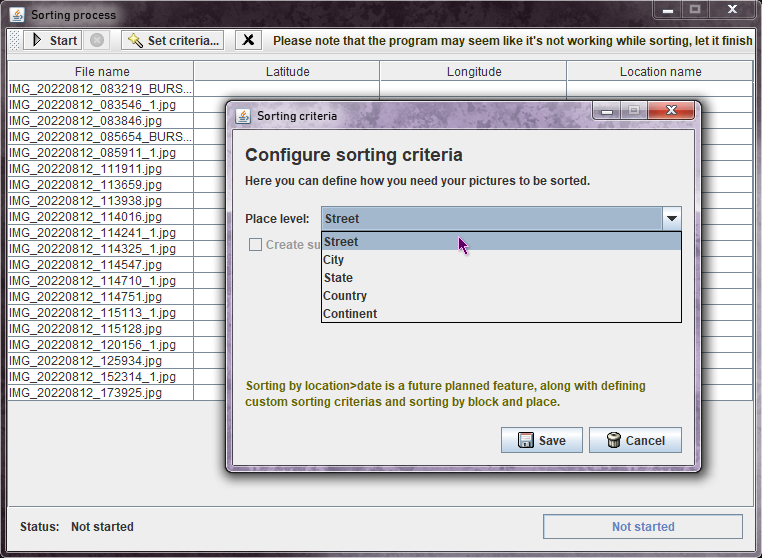
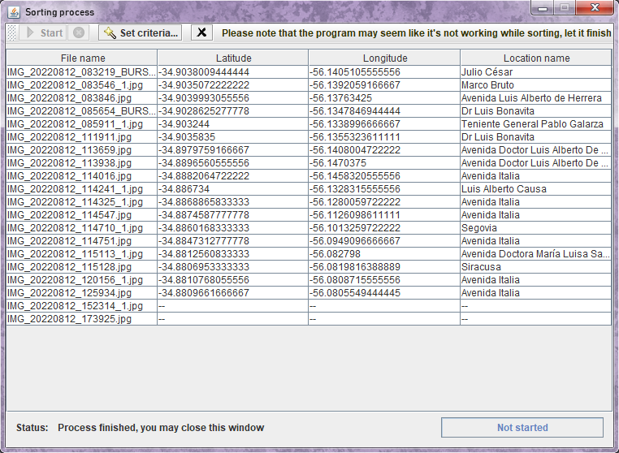
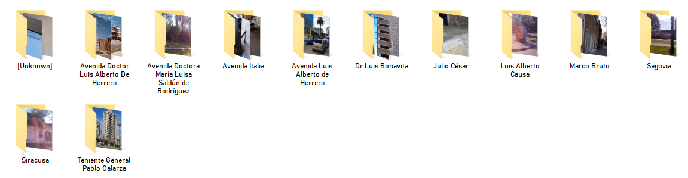

GeoPicSorter is a free and open source program written in Java that will automate the process of organizing pictures based on groups of geolocations such as streets, cities, etc. It's in its early stages of development, contributions of any kind are greatly appreciated!
Information such as credits for used tools, and some details at the README.md file in the repository are planned to be copied in here, as well as organizing information into sub-pages.
*Java SE is required because of support for class version 62 files, which the Java 8 installation doesn't come with (it goes up to version 52). You can download Java SE from the official website at Oracle.
Simply download the latest release from its repository, it's a JAR file that can be opened via a double click or by using the java -jar command.
Before using the tool, it's recommended to create a separate folder with a copy of all the pictures you wish to sort, in order to test the tool's usability.
To get started, open GeoPicSorter by double-clicking the downloaded JAR, this window should show up:
Go to the Program menu, select Open... and finally Folder, you can also just use the Control + O shortcut.
You'll see a folder selector like the one above, it's normal no files show up in it, this is how Java works. So select the folder where you have any unsorted pictures.
A window listing all of the detected files will show up, please note that only .jpg pictures were tested so far, as such, this is the only format that'll be detected.
Optionally, you can click the Set criteria... button to define the sorting criteria to use, the default is by street.
Once you're ready, press Start and wait for the program to finish, there's no proper visual indication yet to let you know how's the process coming along, so please wait until the data shows up at the table, as shown in the screenshot below:
When you're done, you can close this window and repeat the process, or close the tool.
If you look into the folder where you used GeoPicSorter, you'll see the pictures have been copied to one or more sub-folders. GeoPicSorter detects when a picture doesn't have geolocation data, or has it but the API that translates the coordinates doesn't return the required data, and handles them accordingly as shown in the screenshot.